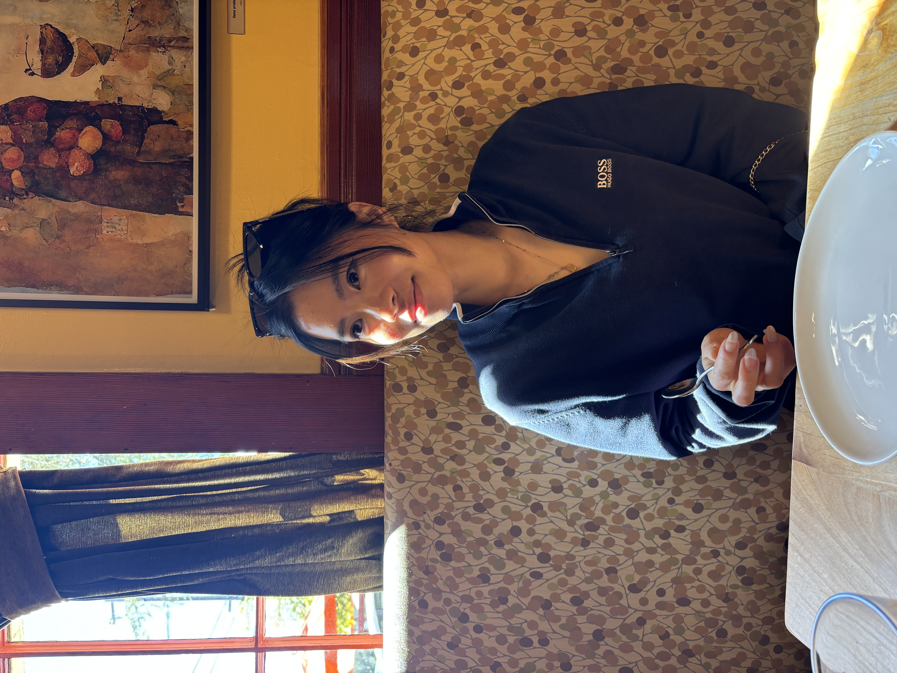
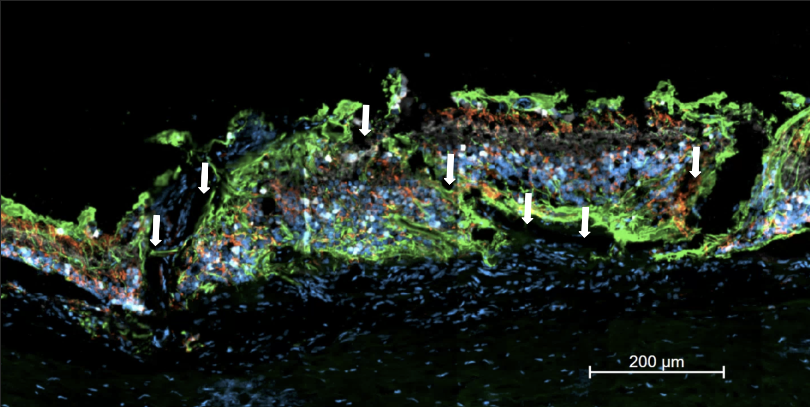
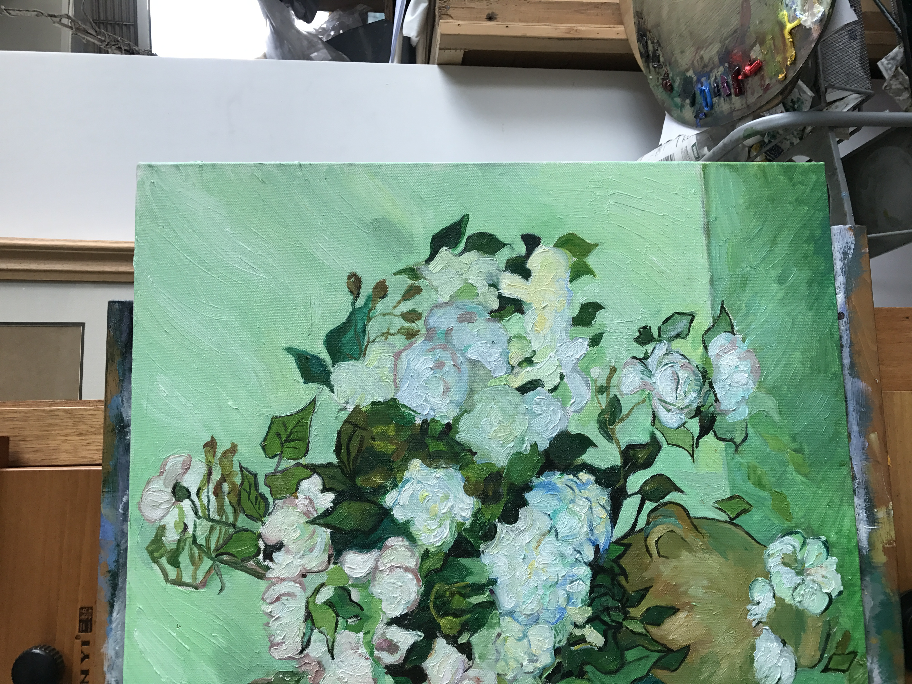
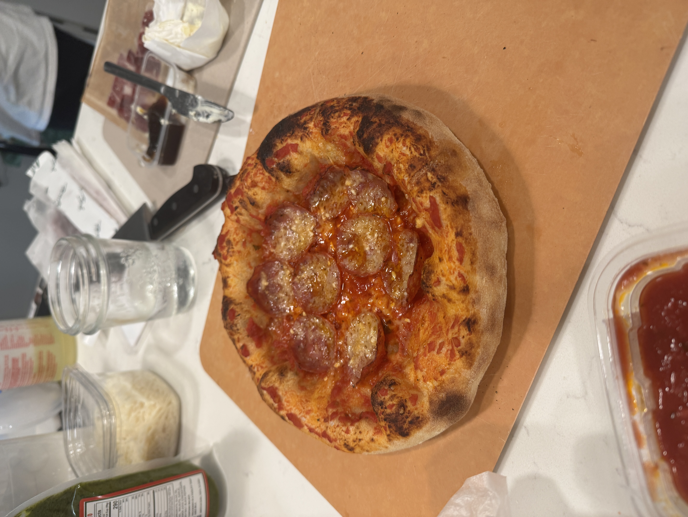

Meredith Linshu
Liu
I paint, bake, and tinker with biotech in my free time. Based in Pittsburgh and Los Angeles.

Neural Handwriting
Decoding
Benchmarked RNN/LSTM vs TCN architectures on 192-channel intracortical motor cortex recordings. TCN reached 64.2% within-session accuracy at 7× the inference speed — but both collapsed to ~9% cross-session, exposing the real frontier of clinical BCI deployment.
Retinal Research
UC Irvine
Four parallel tracks: retinal organoid design and culture from EPSCs, microfluidic chip design for double emulsion PLGA nanoparticle encapsulation, tissue clearing protocol development, and IFA characterisation of subretinal chip and xenograft biocompatibility in a rat model.

Clinical Trial
Landscape Dashboard
Benchmarking the trial portfolios of seven California academic medical centers using ClinicalTrials.gov data: growth, therapeutic focus, industry partnering, and which trials stop early and why.
Oil Painting
A curated collection of oil paintings and sketches created over the years, exploring themes of light, texture, and emotion.

3 Day Neopolitan Pizza
First experiment with 90% hydration enrich brioche with 36 hour fermentation.

OilThe Best Brioche
90% Hydration, 60% cultured butter enriched, 36 hour fermentation.
Baguette Lamp
Dehydrated baguette that is encased in resin.
Making Mouth Guard at Home
Why pay 200 dollars when you can pay 100 dollars and spend hours on it yourself.
Drug Interaction
Prediction
Building a PBPK + off-target binding pipeline to predict clinical drug–drug interaction outcomes. Validated against Phase II/III trial data. Applicable to lead optimization and trial design at research-stage biotech.
Petrodollars & Biopharma
Early-stage research note on how Gulf SWF allocation cycles ripple into biopharma funding and valuations. The lag structure is where the analysis lives.